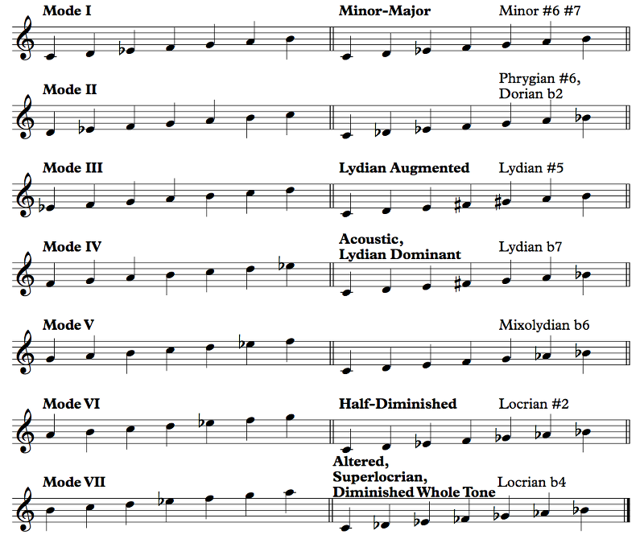
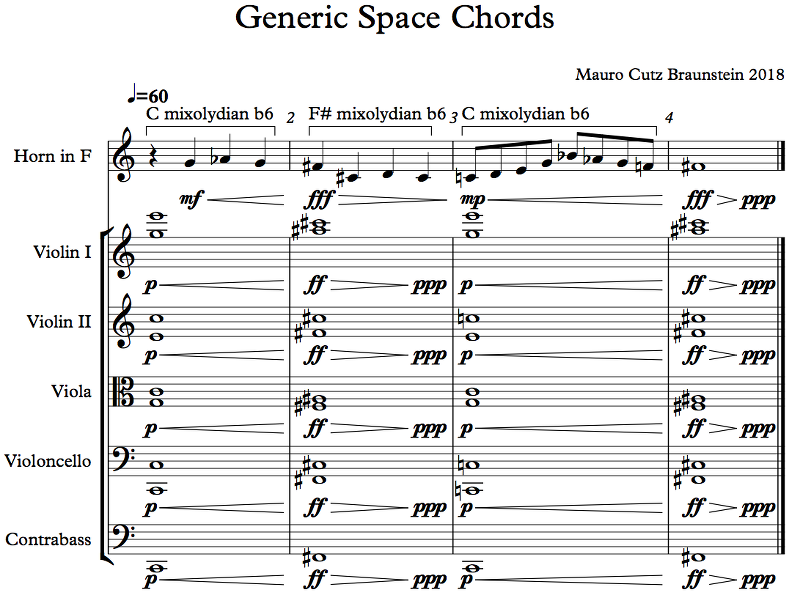

We've talked about melodic minor as an aspect of the minor mode — melodic minor simply refers to raising the 7th when the melody is harmonized by a V or equivalent chord and then raising the 6th if necessary to prevent augmented seconds. So what's going on here? Well, just like how we decided to consider harmonic minor its own independent scale in the previous section, here we're considering the ascending form of melodic minor (1 2 b3 4 5 6 7) as its own independent scale. You can play with it and its modes in the :
Example 7.56
Eh, they just don't have standard names. And some have multiple names. That's capitalism for you.
Actually, though, these scales are just not used very often. When we talked about them in the last chapter as jazz chords, we weren't talking about writing independent melodies using them, even though that's basically what jazz musicians do when they improvise in these scales over the chords they represent. What's the difference? Those improvised melodies are just kind of borrowing the feel of the chord. You can try them out for yourself and see what you get. So I'm not going to bother going deeply into each one, simply because there's just not much of a point, but we'll talk about some of them.
One sort of nifty thing to notice is that, like the diatonic scale but unlike harmonic minor, the melodic minor collection of pitch classes is symmetric with respect to mirror inversion: if you play it upside down, you'll get the same scale. The halfway points of the C melodic minor scale are the G and C#, so mixolydian b6 scale is actually symmetric; inverting the major-minor scale yields phrygian #6, inverting lydian augmented yields the altered scale; inverting the acoustic scale yields the half-diminished scale.
Going down the list, there's really not much to say about any of these scales. One important nomenclature point: augmented just refers to a scale containing an augmented triad, so the lydian augmented scale is the lydian scale but adjusted to contain a 1, 3, and #5. Similarly, we've discussed this already, but dominant refers to the scale containing a dominant 7th chord, which in the case of lydian dominant involves using a b7 instead of a 7.
Minor-major is kind of useful in the kinds of situations that would take a mM7 chord, which in jazz is actually fairly frequently, but we talked about this last chapter. It's just minor, though. I wouldn't consider it as a separate entity from minor just because we're considering its modes separately. Phrygian #6 is just phrygian with an alteration; this alteration can actually be interesting, but I don't know of anyone who's taken advantage of it. Maybe you can write some good examples in this mode. Lydian augmented is basically the whole tone scale with a different upper tetrachord; we'll talk about the whole tone scale in a bit. The half-diminished scale is just locrian with a small alteration that lightens the flavor, but the locrian flavor is quite strong, so raising the b2 doesn't really make the scale more usable, just less dark.
The altered scale is interesting as a chord, but as a scale, it actually has some interesting features. The lower pentachord, 1 b2 b3 b4 b5, can be spelled 1 b2 b3 3 #4, making it the same as part of the diminished scale (which we'll talk about shortly), and the upper tetrachord, b5 b6 b7 1, is part of the whole tone scale. So we can refer to it as the diminished whole tone scale, but if we're going to do that, we might as well simply talk about the diminished scale and the whole tone scale rather than coming up with a strange construct that mixes both. We can just use both scales. It's not a problem.
It does, however, feature something very interesting: the diminished fourth. You will pretty much never see this in jazz, but in darker classical music it pops up from time to time. For an example, look back at Carlebach's Adir Hu, Example 7.47, in the first three bars, but try to hear the D as the tonic instead of the Bb (the recording will obviously not help you there). You get that nice diminished fourth between the D and Gb. You can also find a lot of superlocrian-type stuff in Shostakovich's music; his String Quartet No. 8 opens with it, and about 1:30 in you can see some pretty clear examples, though there's a lot of chromaticism in general so you can't say that the music stays in the superlocrian scale.
That's communism for you.
Lydian dominant is an interesting one. It's also called the acoustic scale, but that's not a very accurate name. If you look at the overtone series in the , you can kind of explore this a little bit. Based on C, overtone 6 is a G about 2 cents sharp relative to equal temperament, 7 is a Bb about 31 cents lower, 8 is a C, 9 is a D about 4 cents higher, 10 is an E about 14 cents lower, and 11 is an F# about 49 cents lower. Compared to the C acoustic scale, C D E F# G A Bb, the only note missing is the A, but we kind of accept that one as given. The problem is that the Bb and F# are way off. The equal-tempered E is about 14 cents higher than the overtone E, but you still hear them as different tunings of the same note. The Bb and F# are just too different, though. Still, the name stuck. It's the acoustic scale; that's just what it is.
But the scale is actually quite usable, if you don't mind not having a 4. The lower pentachord is the lydian pentachord, and the upper tetrachord is the same as in mixolydian. If you go back to Example 7.16, the Simpsons theme, that's pretty much in lydian dominant. The b7 gives lydian dominant a more playful sound, since the 7 with the #4 make it somewhat melancholy. If you play the notes C E F# G Bb C, you'll get the feel for the scale.
Finally, we have mixolydian b6, sometimes known as "melodic major" because it inverts the pattern of melodic minor. Melodic minor is minor with a raised 6th and 7th; melodic major is major with a lowered 6th and 7th. Except that the "melodic" in "melodic minor" refers to adapting the minor scale for melodic writing over V chords, and mixolydian b6 has nothing to do with that procedure, so I'm not going to use that name. This scale is similar to phrygian dominant except without the phrygian bit, the b2, so it's very much a major scale. It's a major scale with a b6, and that gives it a kind of adventurous sound. You hear it quite often in space movies, and it's the kind of cliché that ends up in the amplified strings at your local science museum's IMAX screenings of whatever sciency things are showing now, whether about sharks, snakes, black holes, glaciers, etc. I can guarantee you there will be strings, possibly synthesized, playing a major chord with a deep, rumbling, hideously amplified bass, while a horn section plays a b6 that resolves down to 5. Interestingly enough, I can't find any examples, so here's a silly one I wrote:
Example 7.57
That's the point. Two things going on: first, measures 1 and 3 use the mixolydian b6 scale we're talking about — basically just major with a b6, and the b7 prevents augmented seconds. Measure 2 uses the concept as well, just on a different tonic (measure 4 doesn't have enough material to count). The second thing is the chords. There's not much of a point to doing a Roman numeral analysis because the chords aren't tonal. All that's going on here is a major triad going to the major triad a tritone away, in this case, C to F#. For some reason, space music loves this little chord change. Since the progression is so non-functional, the chord change feels like a direct modulation — that is, a sudden key change — where the new tonic is the root of the second chord. We're in C major (well, we're using C mixolydian b6, but that's a flavor of C major), and then suddenly we're in F# major. The horn melody goes to F# chromatically, so it doesn't feel jarring, just adventurous, which is the point.
Still, do pay attention to the sound of the Ab against the C major chord, as well as the D against the F# major chord.
Yes, but since the G is still there in the violin I and the viola (yes, I know it's alto clef, but that's life), the Ab is heard not as a kind of fundamental dissonance of the chord but just as a non-harmonic tone that needs to be resolved.
Speaking of augmented chords, that's really all I have to say about the melodic minor modes for now, so let's move on to something fairly exciting that actually deals with augmented chords: